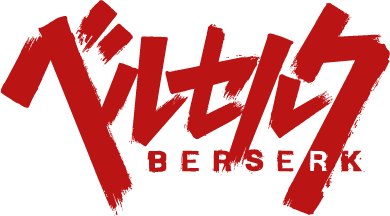

Un guerrero marcado por un destino trágico que lucha incansablemente contra fuerzas demoníacas.
El legendario grupo de mercenarios liderado por Griffith que cambió el rumbo de su vida para siempre.

Una descomunal espada de hierro más parecida a un bloque de metal, capaz de cortar demonios.
Berserk es una obra maestra del manga de fantasía oscura creada por Kentaro Miura. Sigue la historia de Guts, un mercenario solitario conocido como el Espadachín Negro, en un mundo medieval cruento y hostil. Tras sufrir una devastadora traición durante el evento conocido como el Eclipse, Guts emprende un camino de venganza y supervivencia frente a los Apóstoles y la Mano de Dios, demostrando la indomable voluntad humana.